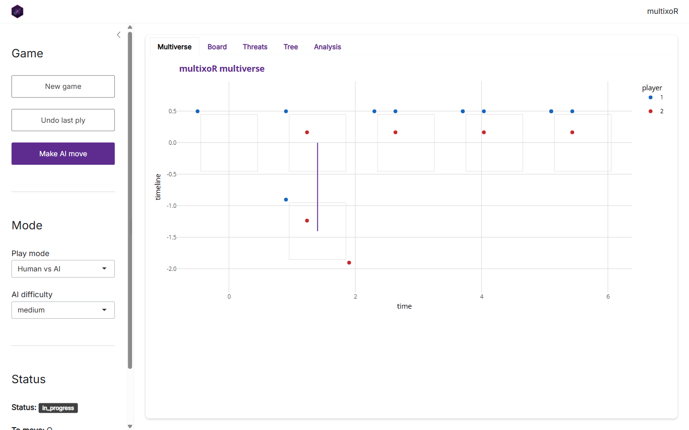
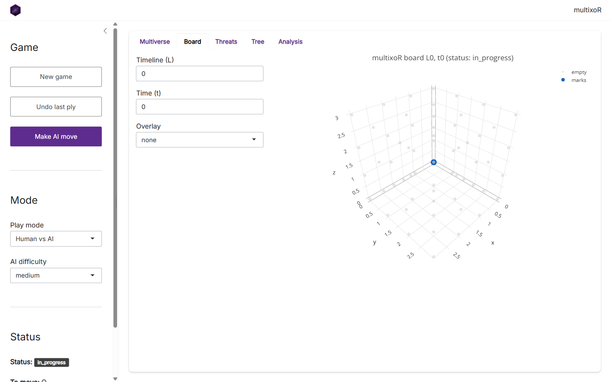
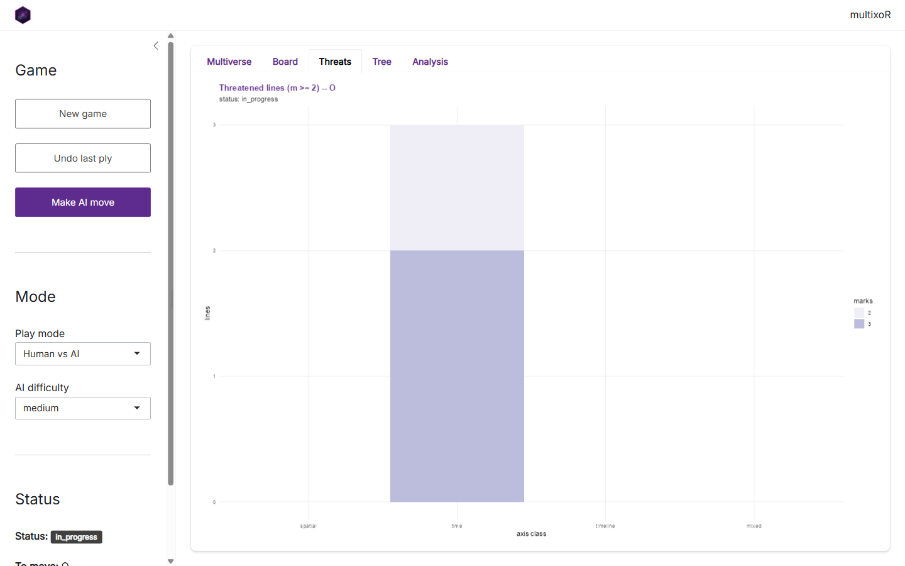
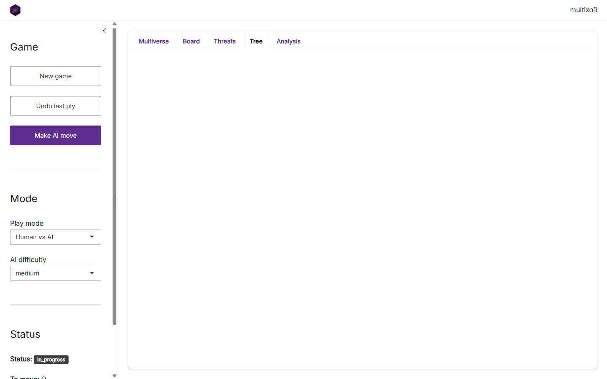
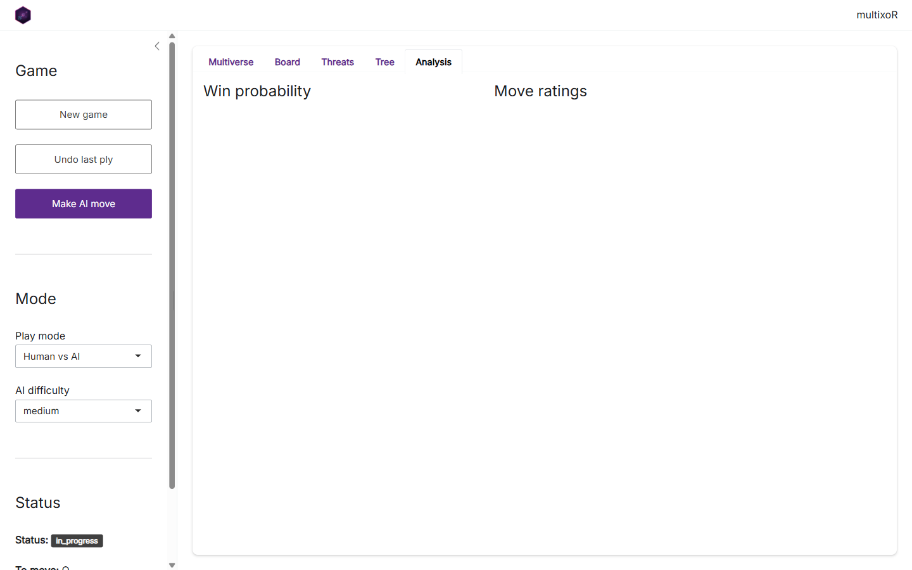

6. Playing in the Shiny app
Source:vignettes/articles/tutorial-6-the-app.Rmd
tutorial-6-the-app.RmdEverything in this tutorial – play, branching, threats, evaluation, and the AI – is wrapped in a point-and-click Shiny app. This final page is a tour of it. The screenshots below were captured from the live app.
Launching the app
The app’s optional dependencies (shiny,
bslib, DT) live in Suggests, so
install them once, then launch:
# install.packages(c("shiny", "bslib", "DT"))
library(multixoR)
mxo_run_app()mxo_run_app() opens with the bundled example game
already loaded. You can seed it with your own position via
mxo_run_app(game = my_game), and set the AI strength with
difficulty = "easy" | "medium" | "hard".
The layout

The window has two parts. On the left is the control sidebar; on the right, a set of tabs that visualise the current game. The sidebar has three sections:
- Game – New game resets to an empty cube, Undo last ply steps back one move, and Make AI move asks the engine to play the side to move.
-
Mode – choose the Play mode (e.g. Human vs
AI) and the AI difficulty. These feed the same
mxo_ai_move()you met in part 5. - Status – a live readout of the game state: status, who is to move, the ply count, and the number of timelines.
The Board tab

The Board tab is the interactive 3-D cube. Use the
Timeline (L) and Time (t) inputs to step to any board
in the multiverse, and the Overlay selector to paint move
ratings (top3 or a full heatmap) on top of the
cells – the same mxo_rate_moves() data, shown in place.
Drag to rotate the cube.
The Multiverse tab
The opening Multiverse tab (shown in the layout screenshot above) is the timeline-by-time grid from part 3, with branch connectors drawn in. It is the fastest way to see the whole game at once and to spot where universes have split.
The Threats tab

The Threats tab is the live version of
mxo_plot_threats(): per-axis-class counts of each player’s
near-complete lines. This is the panel to watch while deciding your next
move.
The Tree tab

The Tree tab draws the branching history as a tree of board states – handy when a game has spawned several timelines and the grid view gets busy.
The Analysis tab

The Analysis tab surfaces the numeric engine: the
position’s evaluation and win probability, and the ranked table of legal
moves. It is mxo_evaluate(), mxo_win_prob(),
and mxo_rate_moves() from part 5, without writing any
code.
Where to go next
That completes the tour. From here:
- Read the Rules and 5D geometry article for the formal specification.
- Browse the function reference for the full API.
- Or just run
mxo_run_app()and start branching.
Previous: 5. Strategy, evaluation and AI | Back to: 1. The board and the five axes